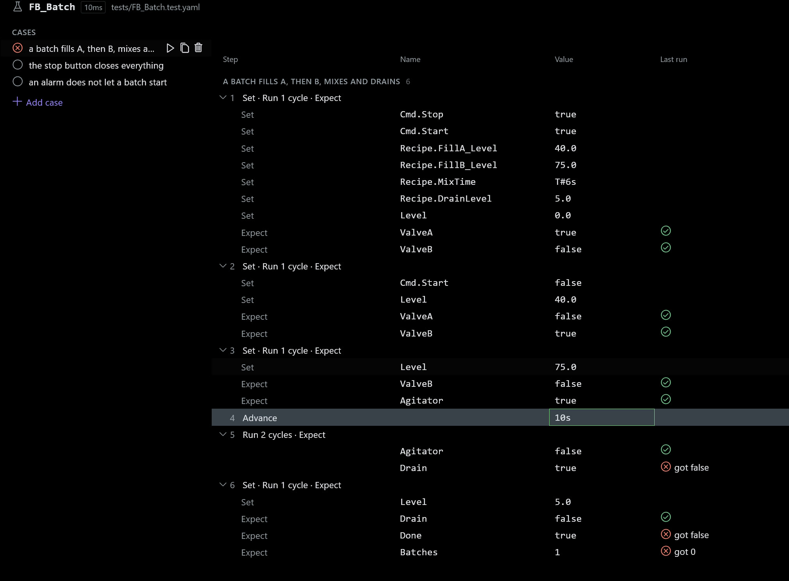
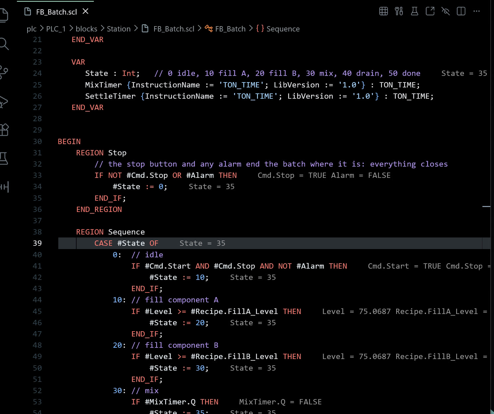
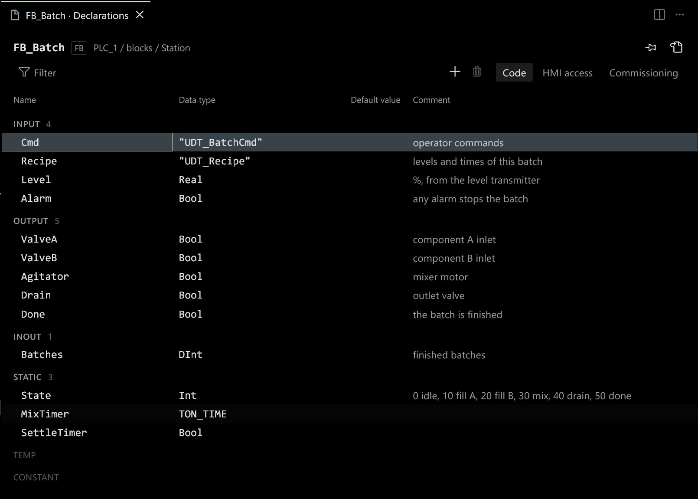
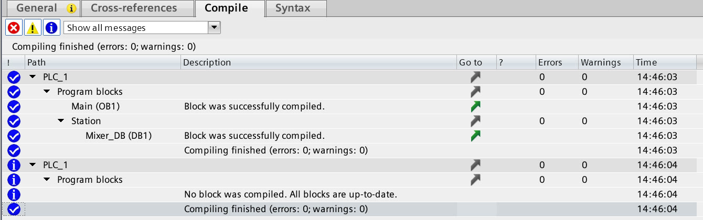
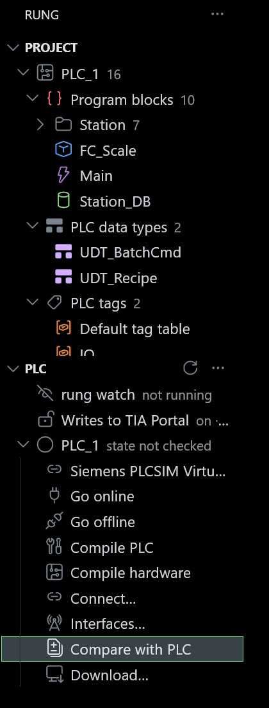

PLC code,in your editor.
Write SCL and LAD in VS Code, Zed or Neovim, test them on your PC, and rung keeps the TIA Portal project in step.
$ code --install-extension sa1ntsinner.rung-scl


The whole project, in your editor.


Declarations as a table
A block's interface beside its code, in TIA Portal's sections. Rename, retype or paste rows from Excel, and undo any of it like a text edit.
Save, and it is in TIA Portal.
Save the file.
While rung watch runs, each save goes to TIA Portal as an import of that block.
TIA Portal compiles it.
You see its errors and warnings in the editor about a second later, before you switch windows.
Change it in TIA Portal, and it comes back.
A colleague edits the block in TIA Portal, and your file gets the change. If you both changed it, rung merges SCL by line and LAD by network.
Test without a PLC.
You write a test in YAML: set the inputs, run a cycle, expect the outputs. rung's simulator runs it in VS Code, in Linux CI and here in your browser. Break the latch and watch the test fail.
We check the simulator against Siemens PLCSIM Advanced by running the same tests on both. How we compare
Fx_Motor.scl
#Running :=
(#Start OR #Running)
AND NOT #Stop;tests/Fx_Motor.test.yaml
block: Fx_Motor
cases:
- name: stays latched
steps:
- set: { Start: true }
cycle: 1
- set: { Start: false }
cycle: 1
expect: { Running: true }Enable JavaScript to try this test.
The project and the PLC.
Project
Program blocks, data types and tag tables, grouped as TIA Portal groups them.
rung watch
Sends what you save and brings back what changed in TIA Portal.
Writes to TIA Portal
Off until you turn them on. A preview shows every line first.
RUNG
Project
PLC_1 16
Program blocks 10
Station 7
FC_Scale
Main
Station_DB
PLC data types 2
UDT_BatchCmd
UDT_Recipe
PLC tags 2
PLC
rung watch watching
Writes to TIA Portal on
PLC_1 RUN · cycle 3 ms
Go online
Compile PLC
Compare with PLC
Download…
PLC state
RUN or STOP and the cycle time, read over S7CommPlus.
Compare with PLC
Is the PLC running what the project has? A comparison that only reads.
Download
Started by a person, the PLC's name typed to confirm. Agents never download.
Online with a real S7-1500.
Values next to every line, TIA watch tables live, alarms and the diagnostic buffer, over S7CommPlus with the PLC's certificate pinned. For program status, rung replays the cycle on its simulator and marks those values as simulated.
For a machine you must not change, one setting makes rung read only: RUNG_READ_ONLY=1 blocks every change to the PLC and to the project.
Git and CI for PLC code.
Your blocks live as files in a git repository. You see who changed which line and why, review a change before it reaches the machine, and let CI run the tests on each push. Agents such as Claude Code read the same files.
Hardware configuration and download stay in TIA Portal.
Your PC
Your editor
FB_Batch.scl and its test
save
rung
watch, sync, tests
Openness
TIA Portal
compile, hardware
download
The machine
S7-1500
runs the program
git push
Git server
git
history, review
on push
CI on Linux
rung test
kept in step by rung your own tools
S7CommPlus over TLS
Live values, watch tables, CPU state, alarms and the diagnostic buffer, for S7-1500 firmware 2.9 and later.
Trace
rung trace record samples signals; TIA Portal's trace CSV imports. VS Code plots both.
Backup of a running PLC
rung copies what it can read from the PLC into one folder, with checksums. It only reads.
A read-only lock
Lock one PLC or the whole machine, and rung refuses any change to the PLC or the project.
TIA Portal without a window
One TIA Portal in the background serves the project's commands and editors.
Open TIA Project…
Mirrors the project and starts watch, on this PC or another Windows PC over ssh.
Open in TIA Portal
Moves the project into a window when you need the hardware view.
Git branches
Check out another branch, and rung brings the TIA Portal project to it.
Debug a test
Breakpoints in SCL, step into calls, step back, set values while stopped.
Why?
The statement that last wrote a value, its operands, and the branch that made it run.
Coverage
Which SCL lines the tests reached, in the editor and as lcov for CI.
Tests against a revision
rung test --against main lists the cases that behave differently from main.
LAD as a ladder
In the editor's theme, with power flow and live values on the contacts.
Tables
Declarations, data types, tag tables and tests, edited in place.
Format as TIA Portal does
So a sync and a pull bring the file back unchanged.
TIA Portal V18 to V21
The version is read from the project file.
Works where you write.
VS Code
Tables, the ladder view, the debugger, the test explorer.
Zed
The language server, tasks and the debugger.
Neovim
rung.nvim with neotest and nvim-dap.
Claude Code
rung's MCP server and PLC skills.
Codex
The same MCP tools, set up in one command.
Cursor
Agents read and test; they never turn writes on.
GitHub Copilot
MCP tools in VS Code's agent mode.
Gemini CLI
And OpenCode, through the same server.
Linux CI
Tests and format checks without TIA Portal.
TIA Portal
V18, V19, V20 and V21 on Windows.
Free core, Pro for teams.
The core is free for individuals, education, non-commercial open source and organisations with up to three rung users, under BUSL-1.1, source-available. Sync, SCL, tests, rung review and the MCP server are all in it.
€49per user, month
- A commercial licence
- Team review and a CI gate
- FAT and SAT records
- Support